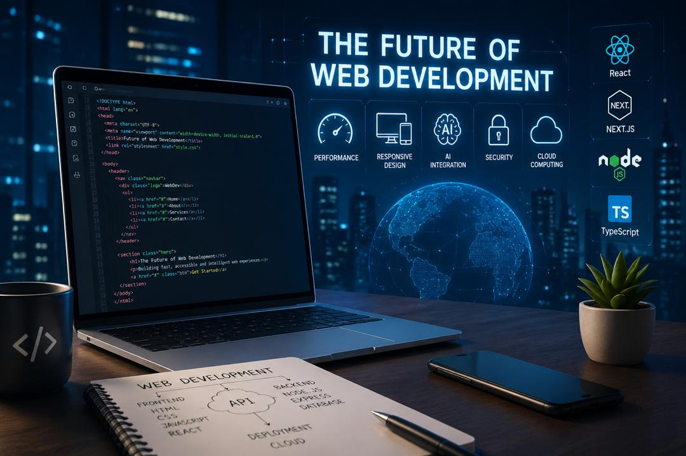

TECHNOLOGY
The Future of Web Development
May 20, 2024 • 5 min read

Web development is changing fast, driven by new tools, smarter frameworks, and the rise of artificial intelligence. Modern websites are no longer just simple pages—they are interactive experiences built to be fast, responsive, and user-friendly across every device. Technologies like HTML, CSS, JavaScript, and frameworks such as React continue to shape how developers build for the web.
Looking ahead, developers will focus more on performance, accessibility, and AI-powered features like chatbots, smart search, and personalized user experiences. With the growth of Web3, cloud computing, and advanced frontend libraries, the future of web development offers endless opportunities for creators who keep learning and adapting to new trends.